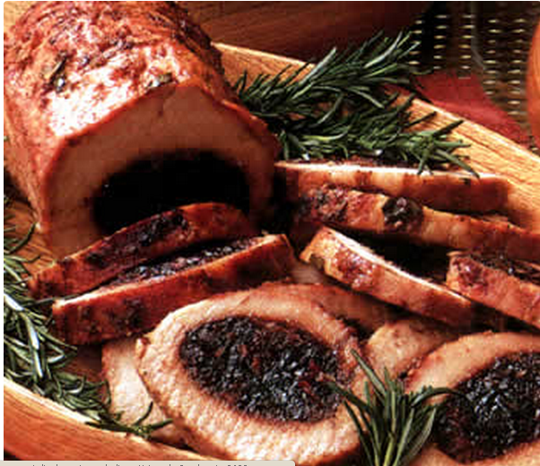
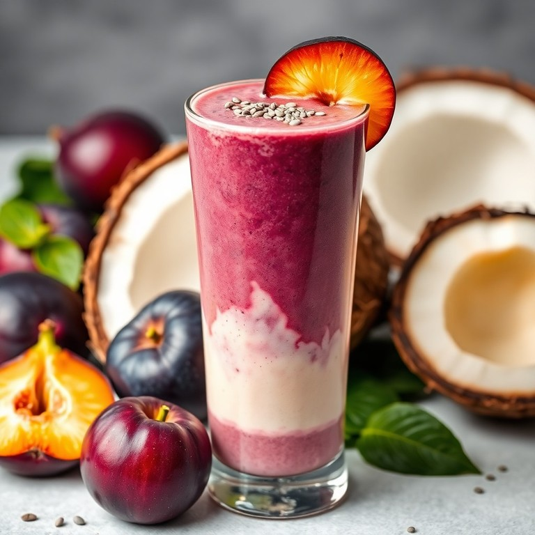
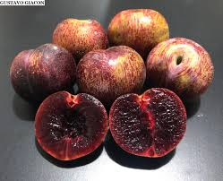
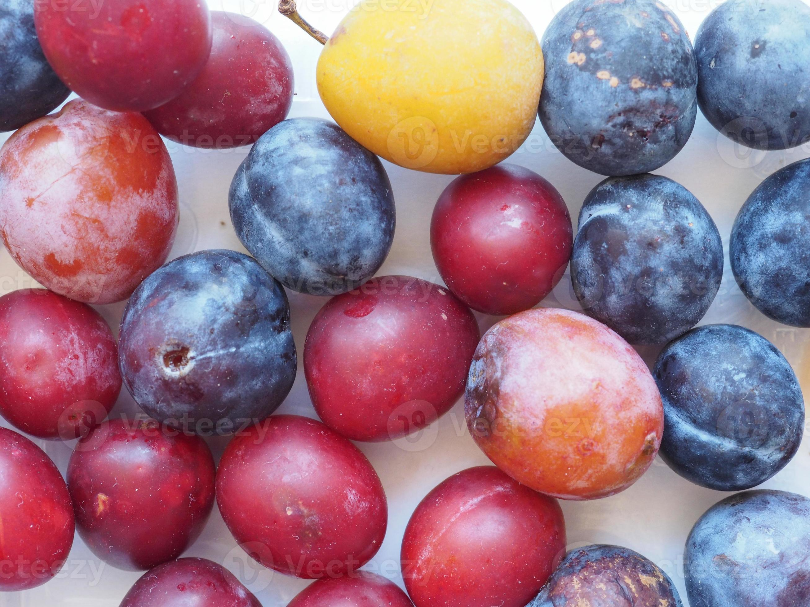
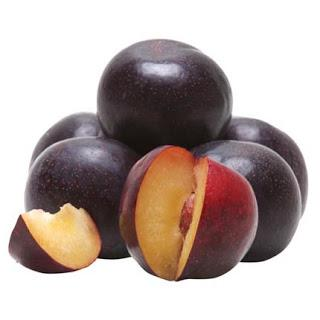
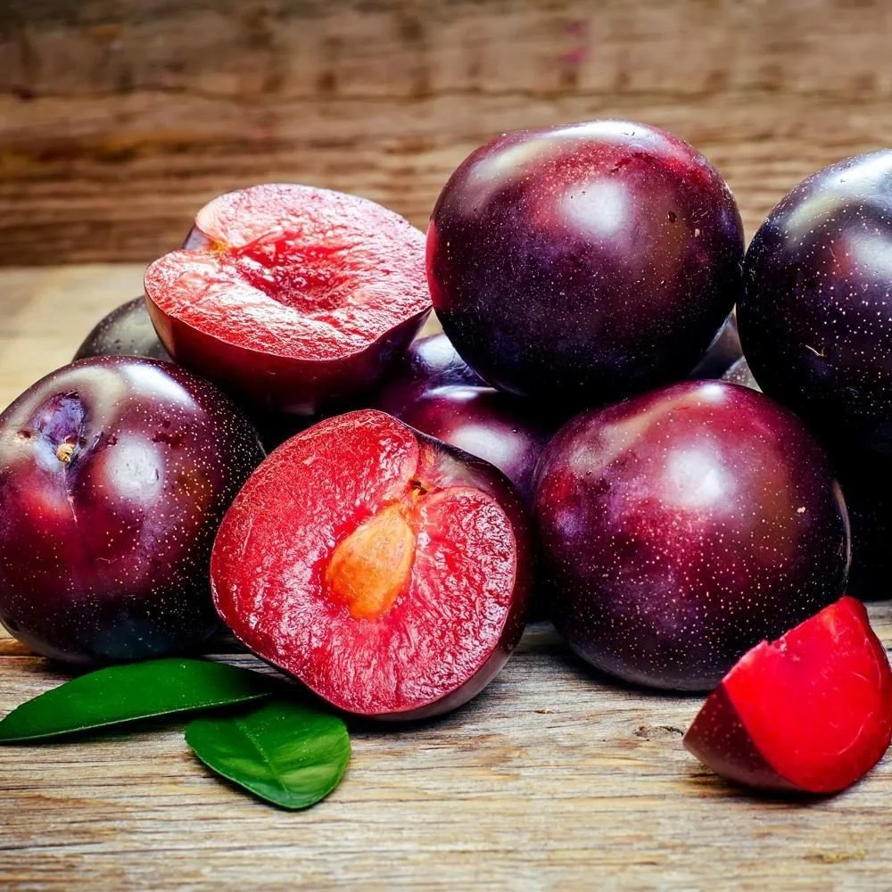
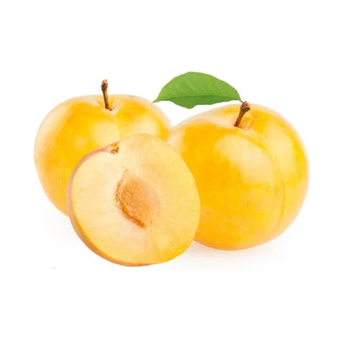
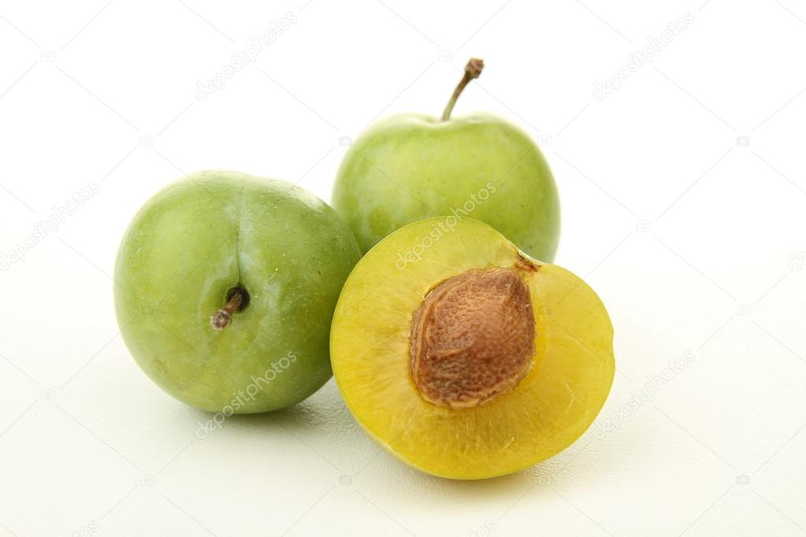
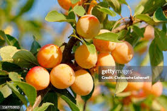
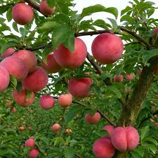

⊹₊˚‧︵‿₊୨୧₊‿︵‧˚₊⊹
Origem Da Ameixa
A ameixa tem origem no continente asiático, com relatos indicando o centro-oeste da Ásia e a China como centros de origem das principais espécies cultivadas (ameixa europeia e japonesa), com um histórico de domesticação que remonta a milhares de anos. Espécies como a Prunus domestica (europeia) se desenvolveram no Cáucaso, enquanto a Prunus salicina (japonesa) tem raízes chinesas.
É um dos frutos de caroço mais versáteis do mundo, pertencente à família Rosaceae, a mesma das rosas, maçãs e pêssegos. No Brasil, destaca-se pelo consumo tanto na forma fresca (in natura) quanto seca (passa).
⊹₊˚‧︵‿₊୨୧₊‿︵‧˚₊⊹
Plantio e Época
Melhor Época de Plantio:
Ocorre preferencialmente durante o inverno (entre Junho e Agosto), período de repouso vegetativo (dormência) da planta.
Floração:
A floração é um espetáculo de pétalas brancas ou rosadas que ocorre geralmente no final do inverno e início da primavera. A duração dessa florada é curta, entre 3 a 5 dias.
Clima:
Exige acúmulo de horas de frio (abaixo de 7,2°C) para uma boa brotação, variando conforme a variedade (de 500 a mais de 700 horas).
⊹₊˚‧︵‿₊୨୧₊‿︵‧˚₊⊹
Composição Nutricional
(por 100g de fruta cada)
Energia: Aproximadamente 40-41 kcal.
Fibras: 1,6g a 1,9g (fundamentais para a digestão).
Vitaminas: Fonte de Vitamina A (betacaroteno), C, K e do complexo B.
Minerais: Rica em Potássio, Cálcio, Magnésio e Ferro.
Outros: Contém sorbitol (laxante natural) e antioxidantes como flavonoides e carotenoides.
⊹₊˚‧︵‿₊୨୧₊‿︵‧˚₊⊹
Benefícios do consumo
Melhora o intestino: rica em fibras e sorbitol (efeito laxativo natural).
Ação antioxidante: combate radicais livres.
Saúde óssea: presença de vitamina K.
Controle da glicemia: baixo índice glicêmico.
Saúde cardiovascular: auxilia na redução do colesterol.
Receitas com ameixa
⊹₊˚‧︵‿₊୨୧₊‿︵‧˚₊⊹
Galette rústica de ameixa.
ingredientes:
ingredientes para a massa:
preparo da massa:
Montagem:
Finalização:
Forno:
⊹₊˚‧︵‿₊୨୧₊‿︵‧˚₊⊹
Lombo Suíno Recheado com Ameixa e Bacon.

ingredientes:
Preparo da carne:
Recheio:
Fechamento:
Cozimento:
Tempo:
⊹₊˚‧︵‿₊୨୧₊‿︵‧˚₊⊹
Smoothie Energético de Ameixa e Iogurte.

ingredientes:
Preparo:
Liquidificador:
Dica extra:
⊹₊˚‧︵‿₊୨୧₊‿︵‧˚₊⊹
Espécies De Ameixa
Ameixa Japonesa
Originária da China, com grande desenvolvimento no Japão, sendo popular no Brasil.
Uso: Ideal para consumo in natura e em sobremesas.

Ameixa Europeia
Comumente roxa ou verde, essa variedade é menos aquosa e mais firme, o que a torna excelente para desidratação e conservas.
Variedades: Inclui as variedades Claudia, Stanley e President, que são populares na Europa.

Ameixa Preta
Varia de vermelho brilhante a roxo profundo, com um sabor suave e doce. É frequentemente utilizada em tortas e sobremesas, pois mantém sua forma ao ser cozida.
Uso: Ideal para pratos que exigem uma textura mais firme.

Ameixa Vermelha
Tem um sabor doce e azedo, e é menor em comparação com outras variedades
Uso: Boa para consumo fresco e em compotas..

Ameixa Amarela
Pequena e redonda, conhecida como ameixa-limão, com uma textura crocante e firme.
Uso: Excelente para tortas e geleias devido ao seu sabor doce e ácido.

Ameixa Verde
A ameixa verde, cientificamente chamada de Prunus domestica, é uma fruta de forma ovalada e carne verde pálida.
Uso: Ela pode ser consumida ao natural, em bolos, tortas e doces, ou usada para preparar compotas.

Ameixa Mirabelle
A ameixa mirabelle é uma fruta pequena, redonda e de cor dourada, conhecida por seu sabor doce e aroma delicado.
Consumo: Para consumir a ameixa mirabelle, é recomendado cozinhar ou processá-la rapidamente após a colheita para evitar a deterioração.

Ameixa Leticia
A ameixa Letícia é uma variedade japonesa muito cultivada no Brasil, conhecida por ser suculenta, doce, com casca avermelhada e polpa amarela firme.
Consumo: Por ser versátil, pode ser consumida de diversas formas.
